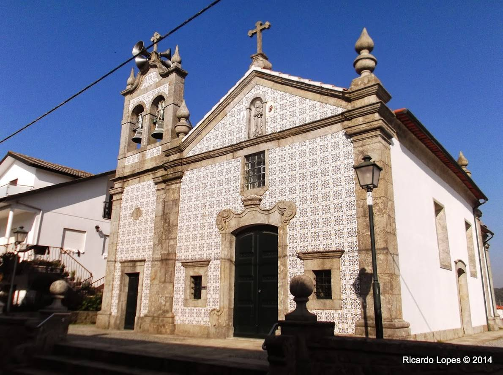

Creixomil
Churches and Chapels
 Parish Church of Creixomil
Parish Church of Creixomil
The Parish Church of Creixomil located in the parish of Creixomil, municipality of Barcelos, Braga district, in Portugal.
Learn more >

Chapel of Nossa Sra. do Rosário
The Chapel of Nossa Sra. do Rosário is located in the parish of Creixomil, municipality of Barcelos, Braga district, in Portugal.
Learn more >
About this Parish
| Administration | |
| Type: | The Parish Council |
| President: | (PS) |
| Demography | |
| Area | |
| Total: | 4,23 km2 |
| Population (2011) | |
| Total: | 834 |
| Density: | 197,2 hab/km2 |
| Other Information | |
| Email: | creixomil.jf@maisbarcelos.pt |
| Website: | www.creixomil.maisbarcelos.pt |
| Patron Saint: | S. Tiago |
| Festivities | |
| N. Sra. do Rosário e Sto. António: | 8 of Junho |
Heraldry

Coat - silver shield with a red mill wheel, highlighted with gold; in-chief of its orange color, green puff and a flower of blue linen. Silver mural crown with three towers. Listel white, with the legend in black:” Creixomil - Barcelos “.
Flag - green. Cord and tassels of silver and green. Rod and cast gold.